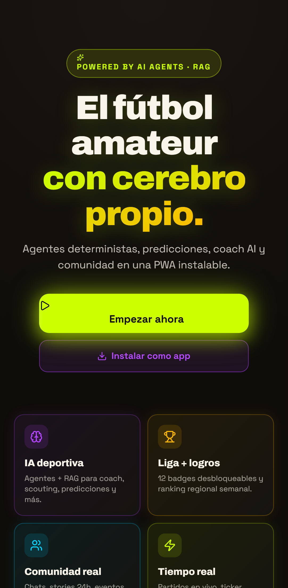
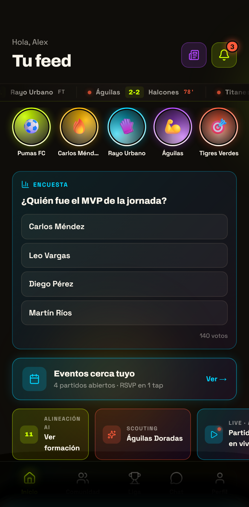
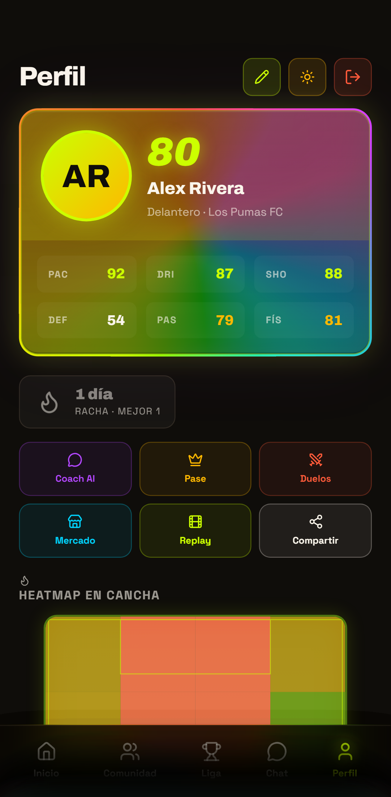
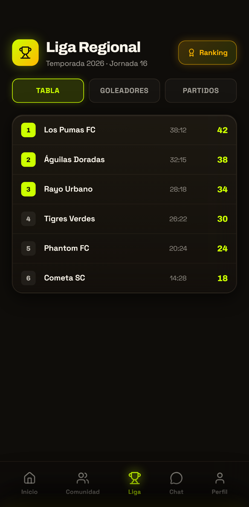
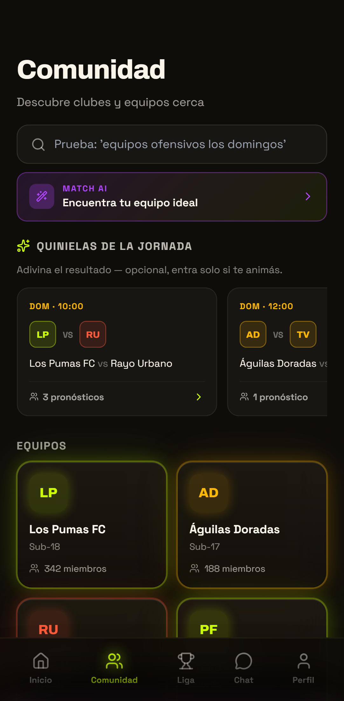

Identidad visual única
Lima neón, ámbar cálido y obsidiana profunda. Una paleta que no se confunde con ningún competidor del mercado deportivo.
GRADA es la red social del fútbol amateur con cerebro propio. Una PWA instalable que mezcla agentes de IA, comunidad real y stats deportivas. Recorre las cinco pantallas principales y mira por qué cada elemento está donde está.
La pantalla de entrada deja claro de qué va la app en tres segundos. Manifesto en letras grandes, dos llamadas a la acción jerarquizadas y un avance del producto en cuatro tarjetas visibles antes de hacer scroll.

El home es el corazón social. Saludo personalizado, marcadores en directo, stories por equipo, encuesta MVP, eventos cercanos y atajos a alineación y scouting. Todo lo que ocurre en tu liga en un único feed con prioridad inteligente.

El perfil del jugador es el centro emocional de la app. Tarjeta estilo FIFA con valoración global y 6 stats individuales, racha de actividad, accesos a Coach AI, mapa de calor de movimiento y compartir directo a redes.

La pantalla de Liga es la fuente oficial de competición. Tabla con posiciones, ranking de goleadores, calendario de partidos — toda la información de la temporada en un clic, con jerarquía visual clara y datos siempre actualizados.

La comunidad es el lado social-deportivo. Buscador semántico, agente Match AI que te empareja con equipos compatibles, quinielas de la jornada con apuestas simbólicas y directorio completo de clubes con miembros y categorías.

Aunque cada pantalla resuelve una tarea distinta, todas comparten el mismo lenguaje visual: tipografía Archivo en headlines, paleta neón sobre fondo obsidiana, micro-interacciones consistentes y una bottom-nav siempre visible que ancla la navegación.
Lima neón, ámbar cálido y obsidiana profunda. Una paleta que no se confunde con ningún competidor del mercado deportivo.
Coach AI, Match AI, scouting con RAG, sugerencias contextuales. La IA está integrada en flujos reales, no en una pantalla aparte.
Sin store, sin descargas. Un tap y la app vive en la home del móvil con notificaciones, offline y carga instantánea.
Solo lo importante: convocatoria, gol, encuesta MVP, mensaje del entrenador. Cero spam, máxima retención.
Cumplimiento RGPD, datos en servidores europeos, control total del usuario sobre lo que comparte y con quién.
Lighthouse 95+ en performance. Animaciones a 60fps. Time-to-interactive bajo 2 segundos en 4G real.
Cada pantalla resuelve una intención clara: llegar, ver lo que pasa, mirar tu progreso, seguir la liga, encontrar tu gente. La tecnología desaparece y queda solo la experiencia del jugador y su comunidad.